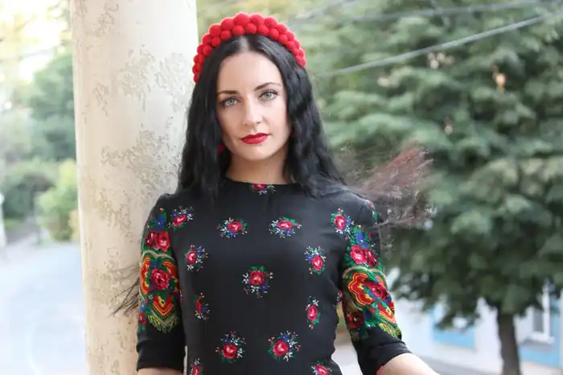

Вікторія Гранецька народилася 24 березня 1981 року в селі Юрівка Козятинського району Вінницької області в родині поляка та українки. В дитинстві писала вірші, казки, оповідання, публікувалась у районній газеті "Вісник Козятинщини".
2003 року здобула фах практичного психолога у Вінницькому державному педагогічному університеті ім. М. Коцюбинського. До 2010 працювала офіціанткою, рекламним агентом, продавцем косметики, доглядачем за маленькими дітьми, консультантом у музичному магазині, коректором в газеті для російськомовних емігрантів Каліфорнії та Філадельфії, журналістом/редактором рубрики "Культура" в місцевому ЗМІ, а також літературним редактором в одному із глянцевих журналів.
З 2010 року мешкає у Вінниці, пише прозові твори. 31 жовтня 2018 року разом з чоловіком Владом Сордом, ветераном російсько-української війни та письменником, заснувала видавництво Дім Химер, що спеціалізується виключно на українській літературі сучасних авторів. 2011 року за рукопис роману "Мантра-омана" отримала першу премію літературного конкурсу "Коронація слова" в номінації "роман". Це був дебютний твір 30-річної авторки, або, точніше, її перший завершений твір такого обсягу. Восени 2011 року роман вийшов у видавництві "Книжковий клуб "Клуб сімейного дозвілля". Упродовж 2012—2013 займалася журналістикою, соціально-культурними проєктами ("100 книжок для сільських бібліотек", "Сучасне Епатажне Креативне Слово", "Письменницькі спогади"), мала кілька публікацій у жанрі малої прози (есей "Симфонія № 38" у складі альманаху "Експрес Молодість", новела "Закохане місто" на шпальтах "Літературної України"), двічі побувала в складі журі конкурсу "Коронація слова". У червні 2013 року в "Клубі сімейного дозвілля" вийшла її друга книжка під назвою "ТІЛО™". У вересні того ж року роман "ТІЛО™" потрапив у десятку фіналістів Міжнародної премії імені О. Ульяненка та увійшов до шорт-листа Всеукраїнського рейтингу "Книжка року'2013" у номінації "Красне письменство". 2015 року почала писати неримовану поезію й отримала диплом лауреата VIII Всеукраїнського поетичного фестивалю "Підкова Пегаса-2015", а згодом за вірш "Смарагдові очі" — лауреатство у Міжнародному поетичному конкурсі "Намалюй мені ніч" від журналу "Склянка часу*Zeitglas". Долучилася до започаткованого "Коронацією слова" проєкту "Воскресіння Розстріляного Відродження" з літературознавчим нарисом "Корабель Юрія Яновського". Взяла участь у I Міжнародному фестивалі оповідання ""Intermezzo" (м. Вінниця) і продовжила експерименти з короткою прозою — у вересні 2015 року побачили світ українська та англійська версії оповідання письменниці "Емігрантка" у складі двомовної збірки есеїв та оповідань "Україна в мені" ("Ukraine within me") від Львівського жіночого літературного клубу (видавництво "Апріорі"). У вересні 2015 року вийшов "Щасливий" — третій роман письменниці, створений на основі реальної історії про українську дівчину та азербайджанського хлопця-мусульманина. Роман нагороджено спеціальною відзнакою "Коронації слова" у номінації "Гранд Романи" та опубліковано у київському видавництві "Нора-Друк". Книга була презентована у різних містах України, в тому числі й у середовищі українських мусульман в Ісламському культурному центрі м. Києва. 2019 р. отримала Всеукраїнську літературну премію ім. М. Коцюбинського за збірку оповідань "Reality Show/Magic Show". Бібліографія: 2011 — роман "Мантра-омана" (видавництво Клуб сімейного дозвілля) 2013 — роман "Тіло™" (видавництво Клуб сімейного дозвілля) 2015 — колективна збірка оповідань та новел "Львів. Кава. Любов" (КСД) 2015 — роман "Щасливий" (видавництво Нора-Друк) 2016 — колективна збірка оповідань та новел "Львів. Смаколики. Різдво" (КСД) 2017 — роман "Дім, у котрому заблукав час" (у співавторстві з Анастасією Нікуліною і Мариною Однорог) (видавництво Фоліо) 2019 — збірка оповідань "Reality Show / Magic Show" (видавництво "Дім Химер").